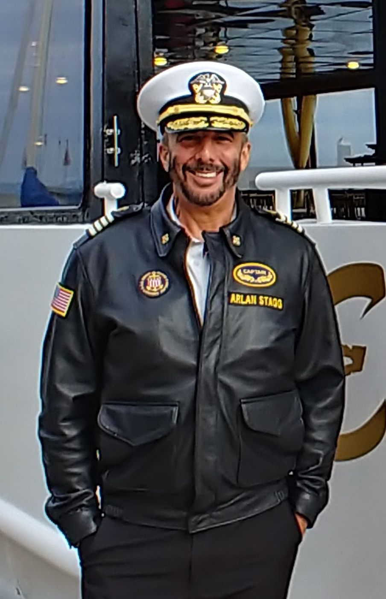

Hi, I'm Captain Arlan Stagg.
I've spent 30 years on San Francisco Bay, and I still love being out on it. I know these waters, the tides, the wind and the weather, and I've spent more than seven years in command.
Today I'm a Director of Operations and lead captain. My days are about the things that keep boats and the people aboard them safe: inspections, maintenance, scheduling, vendor management and compliance.
Now I bring that same care to boat owners around the Bay. I can run your boat, look after it while you're away, help you feel at home at the helm, or help you choose your next boat. I operate powerboats only. For sailboat owners, I coordinate management, maintenance and repairs. I also officiate wedding ceremonies, aboard your boat or on land.
Whatever brings you here, my goal is simple: you relax, enjoy your time on the water, and know you're in good hands.
Qualifications & experience
- USCG 200-Ton Near Coastal Master
- 30 years of experience on San Francisco Bay
- More than seven years in command
- Director of Operations and lead captain
- Vessel inspections, maintenance, compliance, scheduling and vendor management